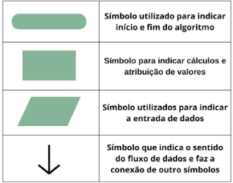

Aula 4
Tipos de Algoritmos:
Um algoritmo é uma sequência de passos lógicos para realizar uma determinada ação, nós já sabemos. Mas,
não sabemos que os algoritmos são divididos em tipos, sendo eles: descrição narrativa, fluxograma e
pseudocódigo ou portugol.
Descrição Narrativa:
Consiste em analisar e interpretar o enunciado do problema e escrever, utilizando a linguagem natural, uma
sequência de passos a serem seguidos.
Vantagens:
Como é utilizada a linguagem natural, não é necessário o conhecimento de um conceito novo para escrever o
algoritmo.
Desvantagens:
Por ser utilizada uma linguagem natural, muitos comandos podem gerar ambiguidades, pois podem ser
interpretados de diversas maneiras.
Ex.: “Veja o homem com Telescópio”
No exemplo, não fica claro se um homem foi visto segurando um telescópio ou se é para ver um homem com o
auxílio de um telescópio.
Fluxograma:
consiste em utilizar símbolos gráficos para representar as sequências de passos a serem
seguidas.
Vantagens:
Vantagens: por ser representado em forma de elemento gráfico o entendimento do algoritmo se torna mais
fácil.
Desvantagens:
É necessário aprender o significado dos símbolos dentro do fluxograma, por ser mais objetivo,
pode descartar detalhes importantes para se considerar quando é feita a transcrição para um programa.
Pseudocódigo ou portugol:
Consiste em analisar e interpretar o enunciado e utilizar um conjunto de regras
pré-definidas para resolver o problema.
Vantagens:
A passagem do algoritmo para qualquer linguagem de programação é extremamente facilitada;
Desvantagens:
Deve-se conhecer as palavras reservadas para o pseudocódigo.
OBS: Na aula serão utilizados os fluxogramas. Assim, os símbolos iniciais que serão utilizados estão na
Figura 01.
Figura 01: Símbolos utilizados em um fluxograma.

Variáveis
Uma variável representa uma posição na memória do computador, onde um dado é armazenado. Cada variável tem
um nome e um tipo associado, que define o tipo de valor que ela pode armazenar (como números inteiros,
texto, etc.). O conteúdo de uma variável pode mudar durante a execução de um programa, mas ela só pode
armazenar um valor por vez em cada instante.
Tipos de Variáveis
Lógico:
São variáveis que representam o estado de algum valor, podendo armazenar dois tipos de valores: o
verdadeiro (true) e o falso (false).
Numéricos (inteiro, real):
Os dados considerados numéricos se dividem em dois grupos inteiros e reais.
Inteiros:
Os números inteiros podem ser positivos e negativos, não possuem parte fracionária.
Ex.: 1, 0, - 3, 345, - 67
Real:
os números reais podem ser positivos e negativos e possuem parte fracionária.
Ex.: -1; - 0,23; 9,5; 0.0
Literal ou Caractere:
São dados representados por um caractere ou um conjunto de caracteres. Esses
caracteres podem ser letras maiúsculas e minúsculas, e números. Quando se atribui um número a uma variável
do tipo caractere, ele será interpretado como um texto, não como um número. Por isso, não é possível
realizar operações com esse número.
OBS: Um caractere é representado entre apóstrofo, um conjunto de caracteres é representado entre aspas.
Identificadores
Os identificadores são os nomes das variáveis, dos procedimentos, métodos, das constantes. Eles são
fundamentais para manter o código organizado.
Regras:
Devem começar com uma letra A - Z ou um sublinhado _ Não podem começar com um número.
Podem conter números, letras e sublinhado _. Não podem conter espaços ou caracteres especiais.
Não podem utilizar palavras reservadas, ou seja, palavras que pertencem a linguagem de programação